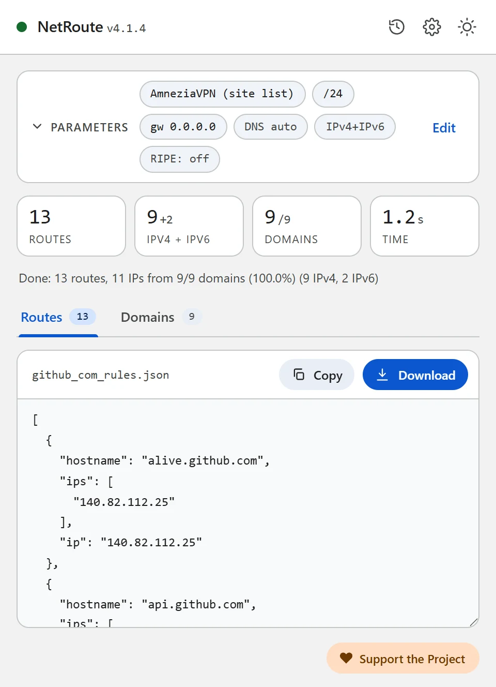
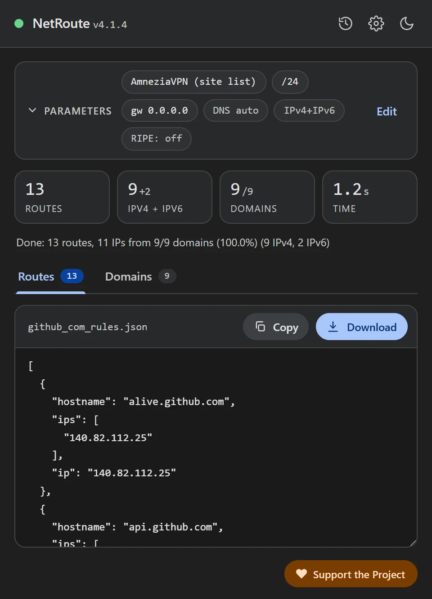

从任意网站生成 AmneziaVPN 网站列表
更新于 · NetRoute 版本 4.1.3
AmneziaVPN 可以只让列表中的地址通过 VPN — 即网站分流。列表由 IPv4 地址和子网组成，为一个拥有几十个域名的网站手工整理列表很费时间。NetRoute 直接从页面完成这件事：打开网站，点击「分析网站」，下载用于导入的文件。
文件内容
该文件是一个 JSON 数组，条目形式与 AmneziaVPN 自身导出列表时一致：每个条目有 hostname、地址列表 ips，以及其中第一个地址 ip — 供旧版本应用使用。
[
{ "hostname": "api.github.com", "ips": ["140.82.112.4"], "ip": "140.82.112.4" },
{ "hostname": "github.com", "ips": ["140.82.112.3"], "ip": "140.82.112.3" },
{ "hostname": "140.82.112.0/20", "ips": [], "ip": "" },
{ "hostname": "185.199.108.0/22", "ips": [], "ip": "" }
]- 带地址的主机。按客户端源代码，AmneziaVPN 在导入时不解析名称 — 条目按原样保存，只有手动添加网站时才会解析。因此 NetRoute 为每个主机写入扫描期间找到的 IPv4 地址；没有 IPv4 地址的主机不会写入。名称不折叠：
www.ozon.ru和ozon.ru是各自带有自己地址的独立条目。 - 子网。主机之后是聚合的 IPv4 子网 — 即 NetRoute 为路由器输出路由时所用的同一批；启用 「路由优化 → BGP 前缀」 后，这些是提供商公告的前缀而不是单个地址。
- 仅 IPv4。按 AmneziaVPN 文档，不支持 IPv6；IPv6 地址不会写入文件。


准备工作
- 已配置连接的 AmneziaVPN 应用。按文档说明，按地址分流在 Amnezia Free 中不可用
- 支持按地址分流的平台：按文档说明，iOS、macOS 和 Linux 只支持按地址分流，Windows 和 Android 则同时支持按地址和按应用分流
- Chrome 中已安装 NetRoute 扩展
步骤 1. 在 NetRoute 中生成列表
- 在 Chrome 中打开目标网站并刷新页面，让扩展的嗅探器看到后台请求
- 启动 NetRoute
- 在 「目标系统」 中选择 AmneziaVPN (site list) — 位于「VPN 客户端」分组
- 「网关 IP」 和 「网络设备」 字段不影响此格式
- 点击 「分析网站」
- 在 「域名列表」 标签页中取消勾选不需要的项 — 统计计数器、广告网络、第三方 CDN；列表会立即更新
- 点击 「下载」：文件以网站命名，例如
github_com_rules.json
步骤 2. 将文件导入 AmneziaVPN
按 AmneziaVPN 文档，列表从网站分流设置中导入：
- 打开 Split tunneling（分流）并进入网站分流设置
- 点击 ⋮ 图标并选择导入：替换列表 — 从头开始时；或将导入的网站添加到现有网站 — 扩充列表时
- 选择下载的文件；条目会出现在列表中
步骤 3. 开启模式并连接
- 选择 Only the sites listed here will be accessed through the VPN（仅此处列出的网站通过 VPN 访问）模式 — 只有文件中的网站走隧道，其余流量直连。另一种模式 Addresses from the list should not be accessed via VPN（列表中的地址不通过 VPN 访问）则相反：把列表排除在隧道之外
- 启用网站分流
- 连接 VPN
步骤 4. 检查
打开为其生成列表的网站：它应通过 VPN 打开，列表之外的网站直连。如果网站只能部分打开 — 说明它的一部分域名不在列表中：检查 NetRoute 的 「域名列表」 标签页，扫描前先在网站上浏览一遍（登录、打开一个视频），让嗅探器看到延迟发出的请求，然后以替换列表的方式重新导入文件。
常见问题
文件无法导入
按客户端源代码，文件必须是由对象组成的 JSON 数组；纯字符串数组会被拒绝。NetRoute 文件已经是正确的形式 — 请检查它是否完整下载，且没有在会替换引号的文本编辑器中编辑过。
网站起初可用，后来不行了
网站的地址变了。在 NetRoute 中重新生成文件 — 启用 「BGP 前缀」 后，文件包含子网而不是单个地址 — 然后以替换列表的方式导入。
无关流量走了 VPN
AmneziaVPN 文档提醒：大型服务的宽泛子网可能捕获无关流量。在 NetRoute 的 「域名列表」 标签页中取消勾选第三方 CDN，或对这类网站关闭 BGP 优化。
与自己服务器的连接断开
按文档说明，当你的 VPN 服务器地址落入某个已添加的子网时，连接会中断 — 请从列表中删除该子网。
一个列表包含多个网站
点击分析按钮旁的 「URL 列表」 并粘贴网站列表 — NetRoute 会为所有网站生成一个文件，名为 bulk_N_rules.json。
DNS 与泄漏
AmneziaVPN 的分流按地址工作：发往列表中地址的流量进入隧道，而浏览器的 DNS 查询发往其解析器所配置的地方。若那是运营商的解析器，即使流量本身通过 VPN，它也能看到网站的名称。在 Chrome 中关闭「使用安全 DNS」或将其指向你信任的解析器；AmneziaVPN 自身的 DNS 设置请参阅其文档。
检查：连接 VPN 后，dnsleaktest.com 会显示是谁的解析器在回答你的查询。
配置文件示例
可直接编辑的模板。将示例中的域名和网段替换为 NetRoute 为目标网站生成的输出。
amnezia-sites.json— 用于导入 AmneziaVPN 的列表：带地址的主机和子网
[
{
"hostname": "api.github.com",
"ips": [
"140.82.112.4"
],
"ip": "140.82.112.4"
},
{
"hostname": "avatars.githubusercontent.com",
"ips": [
"185.199.108.133"
],
"ip": "185.199.108.133"
},
{
"hostname": "github.com",
"ips": [
"140.82.112.3"
],
"ip": "140.82.112.3"
},
{
"hostname": "github.githubassets.com",
"ips": [
"185.199.108.154"
],
"ip": "185.199.108.154"
},
{
"hostname": "140.82.112.0/20",
"ips": [],
"ip": ""
},
{
"hostname": "185.199.108.0/22",
"ips": [],
"ip": ""
}
]
提示：文本格式下载时带有注释头。在 NetRoute 选项中取消勾选 「在导出文件中包含注释」 即可只保留规则；JSON 格式不含注释。
官方文档
相关指南
- Keenetic — 通过
.bat文件上传路由 - MikroTik — 将
.rsc脚本导入 RouterOS - WireGuard — 通过
AllowedIPs分流 - Linux —
ip routeshell 脚本 - OpenVPN — 客户端配置中的
route指令 - sing-box / Hiddify — 用于 sing-box 和 Hiddify 的 rule-set
- Xray / 3X-UI / v2rayN — 用于 Xray-core、3X-UI 和 v2rayN 的 routing.rules
- Happ — 以 happ://routing 链接形式提供的路由配置文件